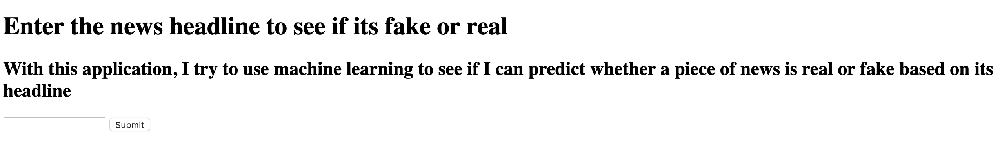
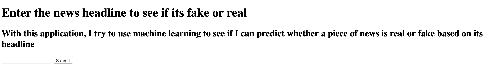
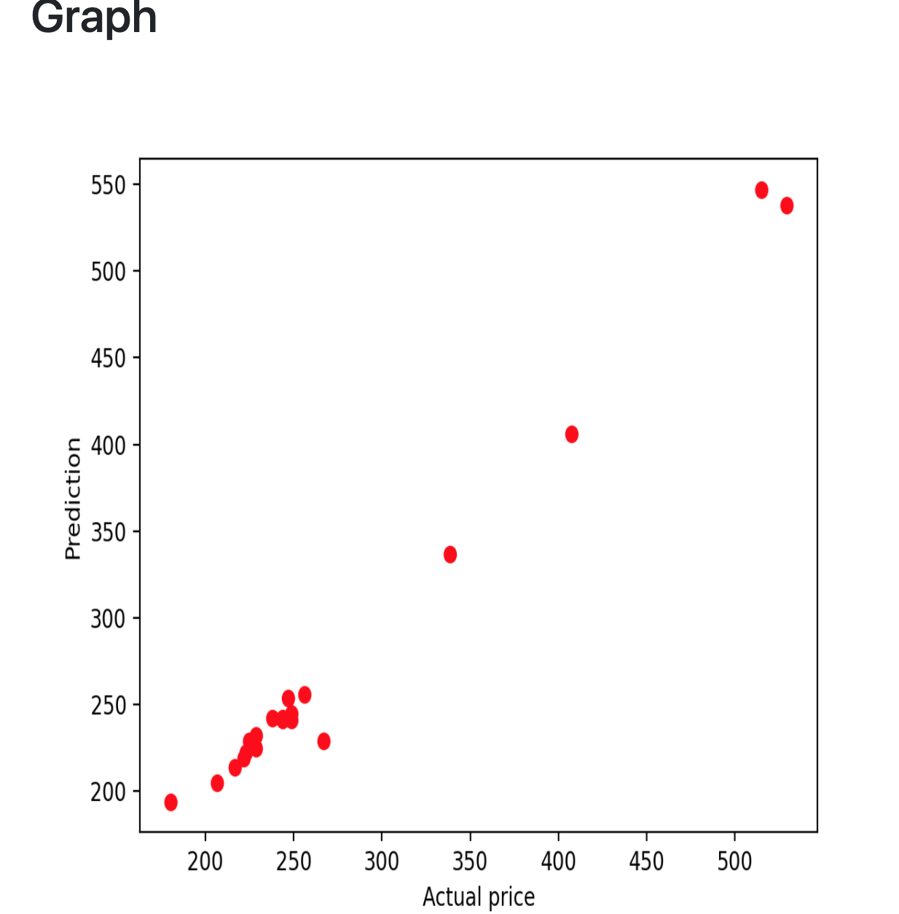
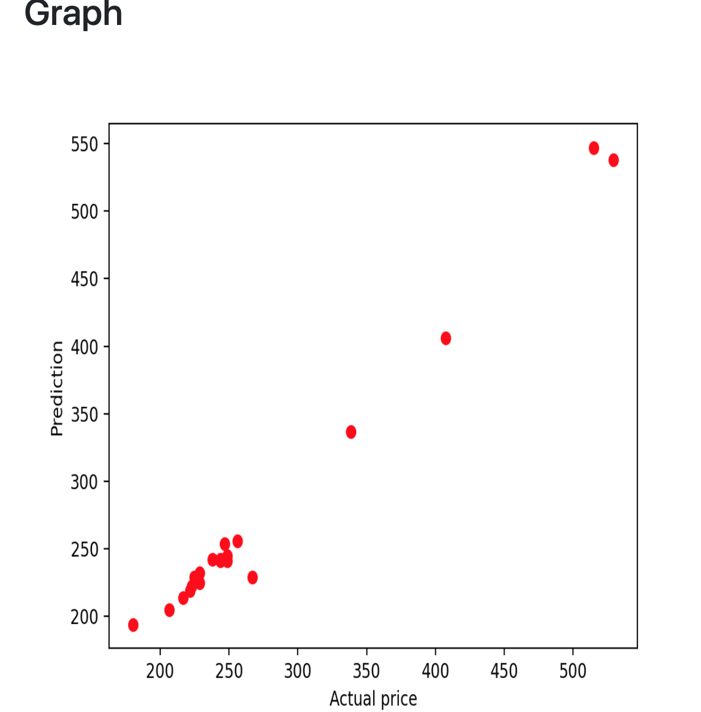

Projects
CLARITY - NSBE Hacks UofT
First place winner and winner of best Google hackClarity is a web app catered towards children that struggle with autism. Children with autism have trouble recognising the emotions of other people. Our application listens peoples speech and analyzes the emotions being conveyed in said speech. After the analysis, recommendations are given to the user on how to navigate the situation, in an attempt to make navigating social situations easier. Click here to see a demo of Clarity

Fake News Predictor
I got the idea for making a fake news prediction application when my mother showed me a news article that was blatantly fake, about the COVID-19 pandemic. It got me thinking about how harmful the effects of misinformation could be in the time of a global pandemic. My fake news predictor uses a bag-of-words model to take note of the frequency of occurrences of various words within each headline. News articles that are fake usually are worded differently than authentic articles with buzz words often popping up or words that indicate a strong sense of bias. For example, a typical fake news headline could be something like "BREAKING NEWS, You won't believe what happened". Once this information is vectorized, the data is then passed through a Naives Bayes model to predict wether or not a piece of news is real or fake. A tool like this could be highly useful in an age where information holds a great amount of power.
Click here to check out my fake news application repo
Click here to see my application in action
 

Stock Price Predictor
This project is my very first machine learning project (the first of many more to come) and was very fun to make. Stock Guru works by training off of previous stock prices. Through this training set, a linear regression model is made. A testing data set is then fed to the linear regression model, which then spits out a predicted future price. Proud to say that most days, the model spits out a roughly accurate prediction. Along with the prediction is also a graphical model comparing the predictions with the actual prices. Click here to check out my stock price application
 

Motive - Starterhacks University of Waterloo
Starterhacks was my very first hackathon and going into the hackathon, I felt a mixed bag of emotions. I remember being nervous about if I would be able to create a working project but also excited at all the possibilities of what me and my team could make. After a very long and sleepless 24 hours me and my team created Motive. Motive is a web application that recommends places of interest located between 2 addresses based on user input. For example, say you wanted to meet up with a friend for a cup of coffee but your friend lives on the other side of the city. Motive will recommend coffee shops in between both of your addresses to make meeting up easier! My role in the development of Motive was implementing the Google Place API in order to display recommendations that the user would be interested in. Give the application a try here


Experience
Bank of Montreal
Business AnalystThe Bank of Montreal was my very first internship and it was a fun experience that I won't be forgetting anytime soon. I learned a lot and made many new friends that taught me how to make the most of an internship.